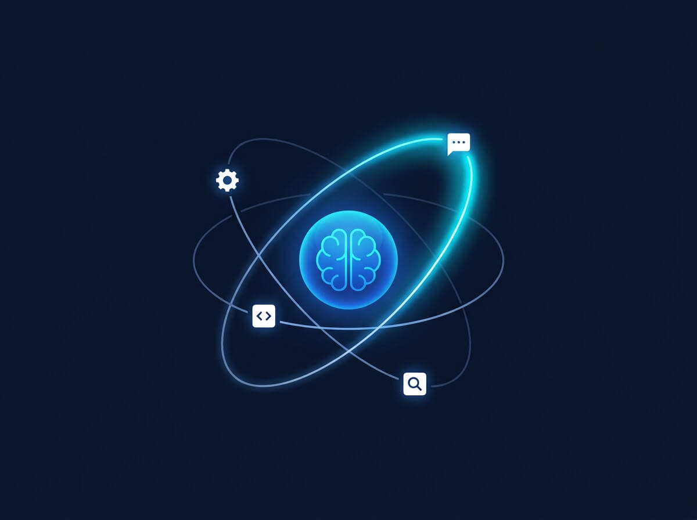

The Architecture of Agentic AI
A developer's guide to ReAct loops, Model Context Protocol (MCP), multi-agent orchestration, and security layers.
Insights on artificial intelligence, programming, and the future of technology

A developer's guide to ReAct loops, Model Context Protocol (MCP), multi-agent orchestration, and security layers.

Exploring the current state of AI, its implications for programmers, and the global race for dominance.

A look into the breakthroughs, challenges, and potential of quantum technology in the digital age.

A guide to becoming a proficient full-stack developer in 2025.

Key trends and best practices shaping software development in the modern era.

How AI and automation are reshaping the technology workforce landscape.

Learn the core principles of Systems Analysis and Design — from requirements gathering to system implementation.
Transforming creativity with tools like Runway and Google’s Imagen Video.

The final exit from fiat slavery — decentralized, scarce, and unstoppable digital money for every South African.

A mathematical exploration of how economic energy shifts between fiat and Bitcoin during inflationary periods.

Why sound money matters. An introduction to the idea that fixing the foundations of money can improve economic stability.

From fundamentals to AI collaboration — a complete guide to building a future-proof tech career.